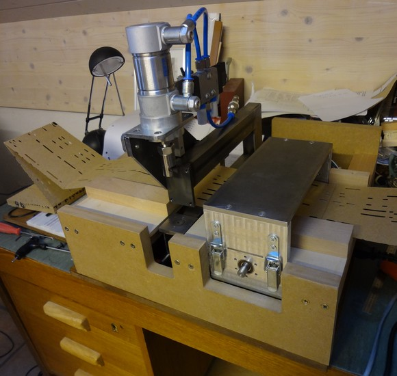
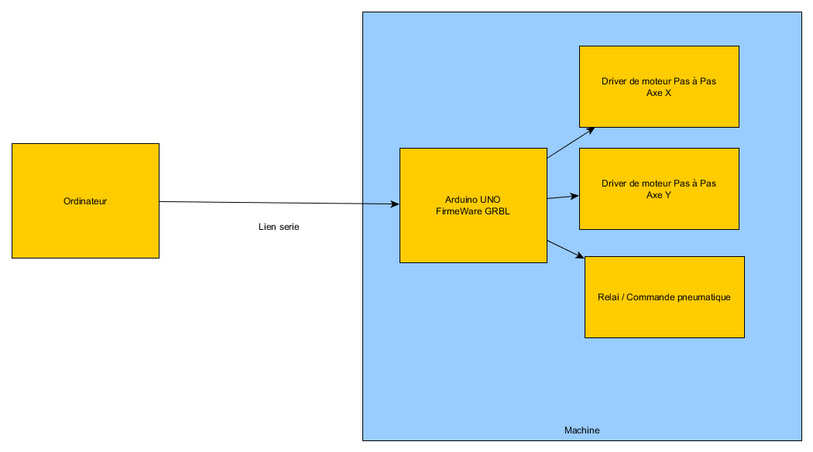

Cette année 2015, Jean Pierre Rosset a réalisé une perforatrice automatique pour carton, en utilisant le meilleure de la technologie actuelle. Fort des projets Open Source Existants, le lien entre la machine outil et l'ordinateur se trouve grandement simplifié, améliorant de fait la fiabilité du pilotage.

Dans les grandes ligne, sa machine , autonome, utilise un arduino pour la gestion des déplacements et problematiques electronique, laissant alors soin à un pilotage CNC utilisant les GCODE.
Cette approche avait également été évoquée par Pierre Penard lors de discussions. Jean Pierre Rousset l'a fait !
Principes de la machine :

La machine est autonome en fonctionnement, l'ordinateur envoie des commandes de déplacement, et de perçage en utilisant une liaison série. Donc plus de perte de pas, et une adaptation simple aux machines existantes. En effet, le paramétrage de l'arduino, permet de positionner une référence, et un certains nombre de paramètres relatifs à la machine. L'ordinateur n'a alors plus besoin de connaitre les détails de construction, et de pilotage, en envoyant des commandes génériques comme une machine à commande numérique.
Il faut dire que le projet utilisé GRBL, implémente un certain nombre de fonctionnalités :
@@@@@
La mise en place passe par plusieures étapes,
1 - La première étape est de compiler le logiciel de commande GRBL en utilisant le code source du projet, situé à cet emplacement: GRBL Cette étape peut être relativement hardue, si vous n'êtes pas familier des outils logiciels de compilation. Pas de panique, nous proposons plus bas un lien vous permettant de récupérer les éléments déjà prêt pour un chargement.
La page du projet propose également un téléchargement du resultat du projet.
Ce Logiciel installés dans l'arduino, permet de transformer votre arduino multi fonction en centrale de pilotage numérique de machine. Ceci est réalisé dans la seconde étape, en utilisant le logiciel de téléchargement Arduino.
2 - Telechargement du logiciel dans l'arduino
l'arduino chargé, il faut vérifier que la liaison série fonctionne correctement, et que l'ordinateur a le driver associé. Dans mon cas, l'arduino a été acheté en chine, et il a nécessité l'installation d'un driver ad hoc : http://www.arduined.eu/ch340g-converter-windows-7-driver-download/
une fois connecté, le chargement du logiciel de pilotage GRBL est réalisé par le logiciel GRBL. à partir du répertoire du projet, il est possible de demander le flash du programme.
C:\projets\pilotage_CNC\grbl-master>make flash
avrdude -C "C:\projets\pilotage_CNC\arduino-1.6.5-r2\hardware\tools\avr\etc\avrd
ude.conf" -c stk500v1 -P COM4 -b115200 -p atmega328p -B 10 -F -U flash:w:grbl.
hex:i
avrdude: AVR device initialized and ready to accept instructions
Reading | ################################################## | 100% 0.02s
avrdude: Device signature = 0x000000 (retrying)
Reading | ################################################## | 100% 0.02s
avrdude: Device signature = 0x000000 (retrying)
Reading | ################################################## | 100% 0.02s
avrdude: Device signature = 0x000000
avrdude: Yikes! Invalid device signature.
avrdude: Expected signature for ATmega328P is 1E 95 0F
avrdude: NOTE: "flash" memory has been specified, an erase cycle will be perform
ed
To disable this feature, specify the -D option.
avrdude: erasing chip
avrdude: reading input file "grbl.hex"
avrdude: writing flash (28572 bytes):
Writing | ################################################## | 100% 4.85s
avrdude: 28572 bytes of flash written
avrdude: verifying flash memory against grbl.hex:
avrdude: load data flash data from input file grbl.hex:
avrdude: input file grbl.hex contains 28572 bytes
avrdude: reading on-chip flash data:
Reading | ################################################## | 100% 3.90s
avrdude: verifying ...
avrdude: 28572 bytes of flash verified
avrdude: safemode: Fuses OK (H:00, E:00, L:00)
avrdude done. Thank you.
Une fois le chargement du programme réalisé, l'outil UniversalGCodeSender, permet d'ouvrir une console sur l'arduino afin de pouvoir paramétrer GBRL.

les commandes peuvent être lancées depuis la boite commande,
le paramétrage des commandes suit ces indications : https://github.com/grbl/grbl/wiki/Configuring-Grbl-v0.9
dans notre cas, nous avons paramétré le système en utilisant ces résultat: (resultat de la commande
Parametrage associé aux tests réalisés le 17/08/2015
$0=10 (step pulse, usec)
$1=25 (step idle delay, msec)
$2=0 (step port invert mask:00000000)
$3=2 (dir port invert mask:00000010)
$4=0 (step enable invert, bool)
$5=0 (limit pins invert, bool)
$6=0 (probe pin invert, bool)
$10=3 (status report mask:00000011)
$11=0.010 (junction deviation, mm)
$12=0.002 (arc tolerance, mm)
$13=0 (report inches, bool)
$20=0 (soft limits, bool)
$21=1 (hard limits, bool)
$22=1 (homing cycle, bool)
$23=1 (homing dir invert mask:00000001)
$24=25.220 (homing feed, mm/min)
$25=500.000 (homing seek, mm/min)
$26=0 (homing debounce, msec)
$27=1.000 (homing pull-off, mm)
$100=25.635 (x, step/mm)
$101=17.000 (y, step/mm)
$102=250.000 (z, step/mm)
$110=30000.000 (x max rate, mm/min)
$111=10000.000 (y max rate, mm/min)
$112=500.000 (z max rate, mm/min)
$120=2000.000 (x accel, mm/sec^2)
$121=2000.000 (y accel, mm/sec^2)
$122=10.000 (z accel, mm/sec^2)
$130=200.000 (x max travel, mm)
$131=200.000 (y max travel, mm)
$132=200.000 (z max travel, mm)
APrint nous permet dans une 1ere étape la génération d'un fichier GCode, pouvant être envoyé sur la machine pour perçage.